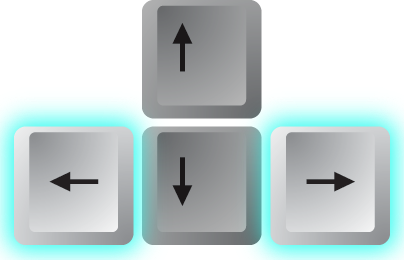

<link rel="import" href="/biomedicalhub/bower_components/polymer/polymer.html">


<!-- Functionality -->

<link rel="import" href="/biomedicalhub/bower_components/iron-ajax/iron-ajax.html">
<link rel="import" href="/biomedicalhub/bower_components/iron-pages/iron-pages.html">

<!-- Dialos -->
<link rel="import" href="/biomedicalhub/bower_components/paper-dialog/paper-dialog.html">


<!-- Styling -->

<link rel="import" href="/biomedicalhub/components/theme.html">
<link rel="import" href="/biomedicalhub/bower_components/paper-menu/paper-menu.html">
<link rel="import" href="/biomedicalhub/bower_components/paper-menu/paper-submenu.html">

<!-- Styling -->
<link rel="import" href="/biomedicalhub/bower_components/iron-icons/iron-icons.html">
<link rel="import" href="/biomedicalhub/bower_components/paper-styles/paper-styles.html">
<link rel="import" href="/biomedicalhub/bower_components/paper-button/paper-button.html">
<link rel="import" href="/biomedicalhub/bower_components/paper-icon-button/paper-icon-button.html">
<link rel="import" href="/biomedicalhub/bower_components/paper-toolbar/paper-toolbar.html">
<link rel="import" href="/biomedicalhub/bower_components/paper-item/paper-item.html">
<link rel="import" href="/biomedicalhub/bower_components/paper-item/paper-item-body.html">
<link rel="import" href="/biomedicalhub/bower_components/paper-fab/paper-fab.html">
<link rel="import" href="/biomedicalhub/bower_components/paper-drawer-panel/paper-drawer-panel.html">
<link rel="import" href="/biomedicalhub/bower_components/paper-card/paper-card.html">

<!-- ZERO MD -->
<!--
<link rel="import" href="/bower_components/zero-md/highlight-themes/default.html">
<link rel="import" href="/bower_components/zero-md/markdown-themes/default.html">
-->

<link rel="import" href="/biomedicalhub/bower_components/zero-md/zero-md.html">
<link rel="stylesheet" href="/biomedicalhub/bower_components/zero-md/markdown-themes/default.css">
<link rel="stylesheet" href="/biomedicalhub/bower_components/zero-md/highlight-themes/default.css">


<!--
    Tutorial list view
-->

<dom-module id="tutorials-list-view">
<style>
    :host {
        @apply(--layout-vertical);
    }
</style>


<template>    
    <paper-menu>
        <template is="dom-repeat" items="{{data}}" as="tutorial">
        <paper-submenu>
            <paper-item class="menu-trigger">{{tutorial.title}}</paper-item>
            <paper-menu class="menu-content">
            <template is="dom-repeat" items="{{tutorial.pages}}" as="page" index-as="page_no">
                <a data-route="page-view" href="{{itemurl(index, page_no)}}" on-click="onDataRouteClick">
                <paper-item>{{page.title}}</paper-item>
                </a>
            </paper-menu>
            </template>
        </paper-submenu>
        </template>
    </paper-menu>
</template>    

<script>
Polymer({
    is: 'tutorials-list-view', 
    itemurl : function(a,b){
        return "/pages/" + a + "/" + b;
    }, 
    onDataRouteClick : function(){
        console.log('Clicked route (in tutorials-list-view dom');
        //$('drawer-panel').closePanel();
        var drawer = document.getElementById("drawer-panel");
        console.log('Got')
        console.log(drawer)
        drawer.closeDrawer();

    }
});
</script>
</dom-module>


<!--
    A single page
-->

<dom-module id="tutorial-page">
<style>
@media screen{
    #main{
        padding: 32px;
        width: 90%;
    }
    paper-fab {
        transition: all 0.2s ease;
        position: absolute;
        bottom: 0px;
        opacity:0.3;
    }
    paper-fab:hover{
        transition: all 0.2s ease;
        opacity:1.0; 
    }
    paper-fab.next{
        right: 16px;
    }
    paper-fab.prev{
        left: 0px;
    }

    .important-section{
        padding : 10px;
        border: 5px solid #fec;
        border-radius: 10px;
        background-color : #ffc;
    }
}
@media print{
	paper-fab{
		display:none;
	}
    #main{
        display: block;
        width:auto;
        height:auto;
        overflow:visible;
    }
}
</style>
<template>
    <div id="main">
        <zero-md file="{{url}}">
            <div id="zero-md-main" class="md-html"></div>
        </zero-md>
        <template is="dom-if" if="{{prevurl}}">
            <a data-route="page-view" href="{{prevurl}}">
            <paper-fab id="button-prev" class="prev" icon="chevron-left"></paper-fab>
            <!--Previous--></a>
        </template>
        <template is="dom-if" if="{{nexturl}}">
            <a data-route="page-view" href="{{nexturl}}">
            <paper-fab id="button-next" class="next" icon="chevron-right"></paper-fab>
            <!--Next--></a>

        </template>
    </div>
</template>    

<script>
Polymer({
    is: 'tutorial-page', 
    properties : {
        url : String,
        nexturl : String,
        prevurl : String,
    }, 
});
</script>
</dom-module>

<!--
    An exercise dialog
-->

<dom-module id="tutorial-page-exercise">
<style>
@media screen{
    .paper-dialog-scrollable{ 
        background-color : #efefef;
        padding: 16px;
        -webkit-overflow-scrolling:touch;
        overflow:auto;
    }
    .blue{
        background-color: #82a5f4;
    }
    .green{
        background-color: #82f4a5;
    }
}
@media print{
    .paper-dialog-scrollable{ 
        display: block;
		width: auto;
		height: auto;
		overflow: visible;
    }
}
</style>
<template>
    <paper-dialog id="{{dlgid}}" class="paper-dialog-scrollable">
        <zero-md file="{{url}}">
            <div class="md-html"></div>
        </zero-md>
        <div>
        <paper-button dialog-confirm class="green" >
        Close
        </paper-button>
        </div>
    </paper-dialog>
    <paper-button id="btn" class$="{{buttoncolor}}" on-click='onClick'>
    </paper-button>
</template>

<script>
Polymer({
    is: 'tutorial-page-exercise', 
    properties : {
        buttontext   : { type : String, value : "Help"},
        dlgid  : String, 
        url : String, 
        buttoncolor : { type : String, value : "blue"},
    },
    ready: function(){
        this.$.btn.innerHTML = this.buttontext;
    },
    onClick : function(){
        var dlg = document.getElementById(this.dlgid)
        dlg.fit();
        dlg.open();
    }, 
});
</script>
</dom-module>


<!--
    //
    // The main App  
    //
-->

<dom-module id="tutorial-pages-app">
<style>
    @media print{
		body * {
		  	display:none;
		}

		/*body .full-view {
		  	display:block;
		}*/
        /*body{ 
			width: auto;
			height: auto;
			overflow: visible;
            display: block;
        }
        #main{
			width: auto;
			height: auto;
			overflow: visible;
            display: block;
        }
		paper-fab{
			display:none;
		}
        .full-view{
			width: auto;
			height: auto;
			overflow: visible;
            display: block;
        }
		*/
    }
	@media screen{
		body {
			font-family: RobotoDraft, sans-serif;
			color: #333;
			margin: 0;
			-webkit-tap-highlight-color: rgba(0,0,0,0);
			-webkit-touch-callout: none;

			overflow-y:auto;
		  }
			
		#main{
			overflow-y:auto;
		}
		  
		paper-card {
			display: inline-block;
			background: white;
			box-sizing: border-box;
			margin: 32px;
			padding: 16px;
			border-radius: 2px;
		  }
		paper-fab.menu{
			transition: all 0.2s ease;
			position:absolute;
			top:50%;
			left:-16px;
			background-color:#88e;
			opacity: 0.3;
		}
		paper-fab.menu:hover{
			transition: all 0.2s ease;
			left: 0px;
			background-color:#88e;
			opacity: 1.0;
		}
		.full-view {
			width: auto;
			height: auto;
			overflow: visible;
            display: block;
		}
	}
</style>


<template>
    <iron-ajax
        auto
        url="/tutoriallist"
        handle-as="json" 
        last-response="{{tutorials}}"       
    ></iron-ajax>

    <paper-drawer-panel id="drawer-panel" force-narrow="true">
        <div drawer id="drawer"> 
            <paper-toolbar>
            <a data-route="home" href="/biomedicalhub/" on-click="onDataRouteClick">
                <paper-fab icon="home"></paper-fab>
            </a>
            <span class="paper-font-title">Exeter Image Processing Workshops</span>
            </paper-toolbar>
            <tutorials-list-view 
                data="[[tutorials]]" 
            ></tutorials-list-view>
        </div>
        <div main id="main"> 
            <paper-fab class="menu" title="Show menu" icon="menu" paper-drawer-toggle>
            </paper-fab>
            <iron-pages attr-for-selected="data-route" selected="{{route}}">
            <section data-route="home">
                <paper-card heading="Welcome to the Biosciences Image Processing tutorial pages">
                <div class="card-content">
                <h3>Tutorials</h3>
                <template is="dom-repeat" items="[[tutorials]]" as="tutorial">
                    <a data-route="page-view" href="{{itemurl(index, 0)}}" on-click="onDataRouteClick">
                    <paper-item>{{tutorial.title}}</paper-item>
                    </a>
                </template>
                <h3>Menu</h3>
                <p style="line-height:150%">
                Use the pull-out menu on the left to navigate the tutorials.
                Open the menu by clicking on the <paper-fab mini style="background-color:#88e;opacity: 0.3;" icon="menu"></paper-fab> 
                button, or by dragging from the left edge of the page
                to right. 
                </p>
                <h3>Navigation within a tutorial</h3>
                <p style="line-height:150%">
                As well as navigating using the pull-out menu, you can navigate within a tutorial's pages using the next and previous page buttons (<paper-fab mini style="opacity:0.3;" icon="chevron-left"></paper-fab><paper-fab mini style="opacity:0.3;" icon="chevron-right"></paper-fab>) on the bottom left and right of the page, as well as the left and right arrow keys (). 
                </p>

                <p>This site works best with Google Chrome</p>
                </div>
                
                </paper-card>
            </section>
            <section data-route="page-view">
                <tutorial-page 
                    url="{{pageurl}}" 
                    nexturl="{{nexturl}}"
                    prevurl="{{prevurl}}"
                    >
                </tutorial-page>
            </section>
            <section data-route="full-view">
                <div class="full-view">
                <template is="dom-repeat" items="{{currentpages}}" as="page" index-as="page_no">
                    <zero-md file="{{page.url}}">
                        <div class="md-html"></div>
                    </zero-md-->
                </template>
                </div>
                    
            </section>
            </iron-pages>
        </div>
    </paper-drawer-panel>

</template>

<script>
Polymer({
    is: 'tutorial-pages-app',
    // See below for lifecycle callbacks
    ready: function() {
        console.log('Setting onkeypress');
        // Set the keypress 
        document.onkeydown=function(ev){
            if(ev.keyCode == '39'){
                if(app.nexturl){
                    document.getElementById("button-next").click();
                }
            }else if(ev.keyCode == '37'){
                if(app.prevurl){
                    document.getElementById("button-prev").click();
                }
            }
        };
    },
    itemurl : function(a,b){
        return "/pages/" + a + "/" + b;
    }, 
    onDataRouteClick : function(){
        console.warn('Code me if needed');
    }, 
});
</script>

</dom-module>
